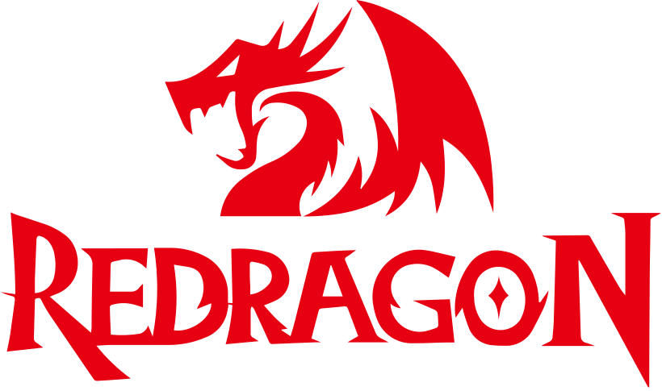

Keyboards
Want to build your own keyboard or find one that suits you?
You are in the right place!
Start exploring our resources and find the perfect keyboard for your needs. Whether you are a beginner or an experienced builder, we have something for everyone.
 Recommended Brands
Recommended Brands
| Keychron | AULA | YUNZII | Epomaker | Womier | RK Royal Kludge | Red Dragon |

These are some of the popular beginner-friendly keyboard brands known for their quality and variety. Keychron is known for its versatile and well-built keyboards, but it is more pricey. AULA is known for its budget-friendly options and unique designs that still holds up quality. YUNZII is like a budget-friendly Keychron, offering affordable and reliable keyboards that is suitable for beginners. Epomaker is recognized for its customizable keyboards. Womier provides stylish and functional keyboards, it can get pricey depending. RK Royal Kludge is popular for its wireless keyboards and beginner-friendly options. Red Dragon is known for its gaming keyboards that can be customized to your liking. It all comes down to your budget if anything. These brands are at least beginner-friendly. Each brand share their own unique flare and it also comes down to preference. They also have hotswappable options, meaning that you can change your switches. It also depends if the keyboard supports 3 pin or 5 pin switches or even both. 3 pin and 5 pin is how the switch connects to the keyboard, so look out for those that might support both pins. Explore their offerings to find the one that suits your preferences and needs.